地政学
ポートランドはコロンビア川流域の内陸港で、太平洋、カスケード山脈、農業地帯、カナダ方面を結ぶ。州都ではないが、港、空港、鉄道、環境政策、抗議文化が重なり、北西部の制度と交易を映す。水も政治になる。

🇺🇸 アメリカ合衆国 / 北米 / World City Atlas
川と橋、港湾、半導体回廊、都市計画、抗議の政治、クラフト文化、森林に近い暮らしが重なる太平洋岸北西部の内陸港湾都市。
都市の骨格
ポートランドはウィラメット川とコロンビア川の結節点に発展した内陸港であり、橋、鉄道、空港、半導体郊外、住宅街、公園、抗議の広場が同じ都市圏に重なる。
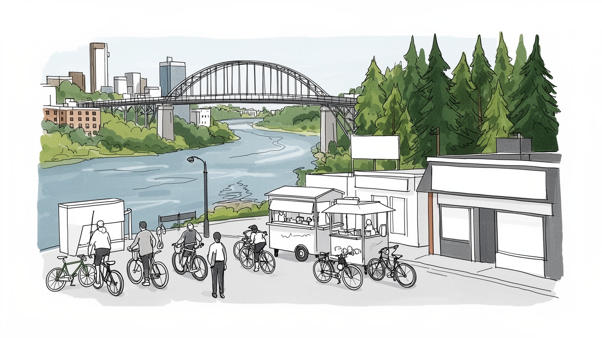
ポートランドはコロンビア川流域の内陸港で、太平洋、カスケード山脈、農業地帯、カナダ方面を結ぶ。州都ではないが、港、空港、鉄道、環境政策、抗議文化が重なり、北西部の制度と交易を映す。水も政治になる。
半導体、港湾物流、医療、大学、食品加工、スポーツ用品、建築設計、観光が雇用を支える。高技能職の周囲で、倉庫、配送、飲食、介護、清掃の労働も厚く、家賃上昇が働く人の居場所を揺らす現実がある都市でもある。
先住民の記憶、教会、仏教寺院、移民の礼拝、独立書店、音楽、クラフトビール、菜食文化が街の個性を作る。自由な表現と白人中心性への批判が同居し、多様性を実際の制度へ移す力が問われる都市である今もなお。
住民は川沿い、公園、自転車道、カフェ、食堂、雨の通勤を日常にし、旅行者は庭園、書店、醸造所、渓谷、山を巡る。暮らしやすい街という評判の裏で、住宅不足、薬物、治安不安も続く現在進行形の都市でもある。
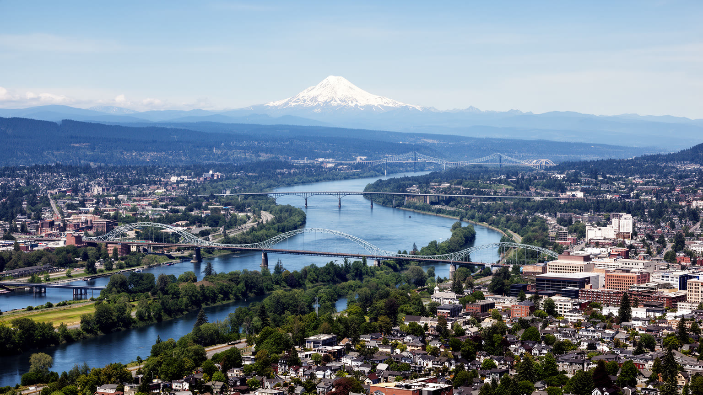
ポートランドを読む出発点は、ウィラメット川が都心を貫き、北でコロンビア川に合流する地理である。海岸から内陸に入った港は、外洋の荒さから少し離れながら、太平洋貿易と内陸農業地帯を結んできた。川は橋の都市景観を作り、東西の住宅地、倉庫、鉄道、幹線道路、公園を分けると同時につなぐ。西側の丘陵、東側の平坦な街区、北の工業地、南の大学や医療地区は、それぞれ異なる移動感覚を持つ。川辺は散歩や観光の舞台である一方、洪水、汚染、護岸、先住民の漁労、港湾機能の記憶も抱える。都市が緑と水のイメージを掲げるほど、川を誰のために開くのかが問われる。自転車で橋を渡る日常、貨物列車が水辺を抜ける音、雨の日の水位、夏の乾いた光は、ポートランドの時間を作る。川は美しい背景ではなく、経済、住まい、環境正義を同時に動かす都市の骨格なのである。さらに橋ごとの性格は、通勤、観光、物流、抗議の動線を変える。水辺の再開発が進むほど、古い倉庫や工業の記憶を残すのか、住宅と公園へ置き換えるのかという判断が必要になる。川を中心に見ると、都心の魅力と周縁の負担が一枚の地図に現れる。水面をまたぐ短い移動の中に、都市の歴史と現在の利害が凝縮される。春の増水や冬の暗い雨も、橋の通勤、河岸の維持、低地の住宅に影響する。地形を読むことは、観光の眺めを越えて、誰が水辺の利益とリスクを負うのかを読むことでもある。
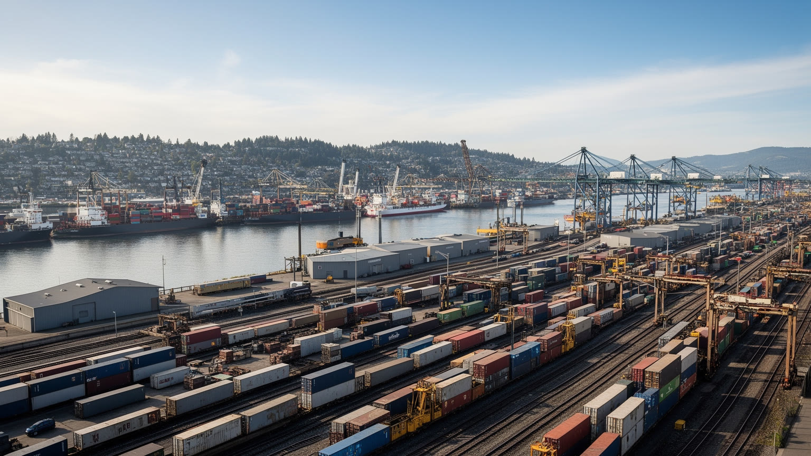
ポートランド港は、観光客が見る川辺とは別の実務的な都市を支えている。コロンビア川の航路、鉄道、州間高速道路、空港貨物は、穀物、木材、機械、鉱物、輸入品、電子商取引の流れを束ねる。西海岸の巨大港ほど目立たなくても、内陸の農業地帯と太平洋を結ぶ役割は大きい。港湾では船員、港湾労働者、通関業者、トラック運転手、整備士、倉庫作業員、警備員が働き、国際需要や労使交渉の影響を受ける。物流は地域経済を支える一方、排気、騒音、水質、低所得地区への負荷、川岸の土地利用をめぐる問題を生む。気候政策が進むほど、港は脱炭素燃料、電化、鉄道利用、浚渫、災害時の復旧力を考えなければならない。ポートランドの国際性は、空港の旅客だけでなく、雨に濡れた倉庫群と貨物線にも現れる。川を眺める都市の美しさと、川で働く都市の現実を重ねて見ることが重要である。コンテナの便数が変われば、倉庫の稼働、トラックの待機、郊外の雇用も変わる。農産物輸出や自動車関連の動きは世界景気に左右され、地域の小さな事業者にも波及する。港は遠い市場を近くするが、その近さは騒音と排気を引き受ける地区の存在によって成り立つ。港湾を残すことは、土地を住宅や公園へ変える誘惑との調整でもある。大地震時の岸壁、橋、燃料、倉庫の復旧力も、地域の暮らしと広域供給を左右する。物流を都市の外側の問題にしない視点が必要だ。
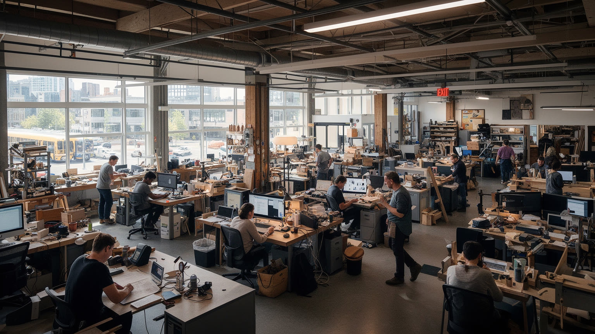
ポートランド都市圏の経済は、都心の小さな店舗や創造産業だけでなく、西郊の半導体、電子部品、ソフトウェア、研究開発、医療、大学、スポーツ用品企業に強く支えられている。ヒルズボロ周辺の工場や研究施設は、世界の供給網、米国の産業政策、移民技術者、地域の水と電力に依存する。高技能職は税収と消費を押し上げるが、その周囲では建設、警備、清掃、配達、保育、介護、飲食、倉庫の労働が都市を動かす。賃金の差が住宅地を分け、通勤時間と家賃負担を広げる点は見逃せない。半導体工場は高度な技術の象徴である一方、大量の水、化学物質管理、電力、災害対策を必要とする実体的な産業である。ポートランドをテック都市として読むなら、企業名や起業文化だけでなく、技能訓練、労働組合、移民制度、環境規制、住宅政策まで同じ地図に置く必要がある。知識経済は机上だけで完結せず、郊外の工場と毎日の生活労働に根を張っている。大学やコミュニティカレッジは次の技術者を育て、移民家庭の進路にも影響する。景気が冷えれば契約社員や下請けが先に揺れ、好況期には住まいと保育の不足が採用を妨げる。産業の強さは、働く人が都市圏で暮らし続けられる条件と切り離せない。成長企業の周辺で誰が夜勤を担い、誰が遠距離通勤を強いられるのかまで見て初めて、労働市場の姿が見える。
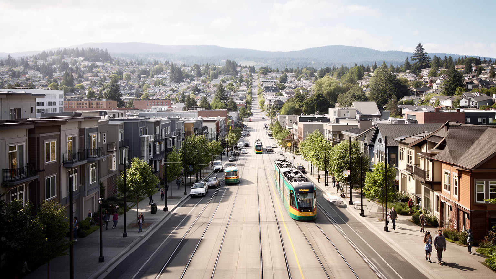
ポートランドは、都市成長境界、公共交通、自転車道、歩きやすい地区、古い倉庫の再利用で知られてきた。郊外の無秩序な拡大を抑え、中心部や沿線に密度を戻す考え方は、米国の都市計画の中で重要な参照点になった。だが、計画の評価は住宅の現実と切り離せない。人気地区では家賃と住宅価格が上がり、黒人住民の歴史を持つ北東部や低所得者の多い地区では、再開発と転出圧力が続いた。集合住宅の増加は供給を助けるが、十分な低価格住宅、家賃補助、退去防止策、支援付き住宅がなければ、街の多様さは保てない。ホームレス問題は住宅不足、精神医療、依存症、雇用、家族関係、刑事司法が絡む都市問題であり、歩道や公園の管理だけでは解けない。ポートランドの計画文化は、理念を実際の住まいへ変えられるかを試されている。美しい街路樹や路面電車の景観の裏で、誰が中心近くに住み、誰が遠い郊外へ押し出されるのかが都市の公平性を決める。中庭住宅や付属住戸を認める制度変更は、単独住宅地のあり方を少しずつ変えている。しかし建設費と金利が高ければ供給は遅れ、低所得者に届く住まいは不足する。計画の成功は街並みの良さではなく、移転せず暮らせる人の広がりで測られる。交通と住宅を別々に扱えば、車を持てない世帯ほど選択肢を失う。住まいの近くに仕事、学校、診療、買い物を置けるかが次の課題である。
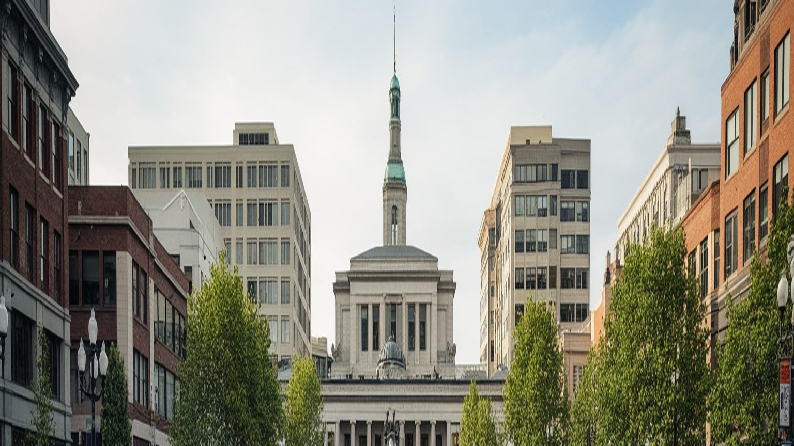
ポートランドは進歩的な都市として語られることが多いが、その政治文化は穏やかな合意だけで成り立っているわけではない。環境運動、反戦、労働、警察改革、人種正義、住宅支援をめぐる抗議行動は、公共空間と市政を強く揺らしてきた。二〇二〇年の抗議は、警察暴力への怒り、連邦政府との対立、中心部の治安不安、商店の被害、メディアの注目を一気に集め、都市のイメージを変えた。抗議は民主主義の重要な表現である一方、地域住民、店舗、労働者、警察、裁判所、活動家の間に深い不信を残すこともある。ポートランドの政治を読むには、リベラルなラベルだけでは足りない。高所得の白人住民が理念を掲げながら、低所得者住宅や支援施設を近隣に受け入れにくい矛盾もある。市民参加が活発であるほど、発言する時間を持たない人、英語が得意でない人、路上で暮らす人の声をどう制度に入れるかが問われる。広場の熱と予算の実務をつなげられるかが、この都市の政治的成熟を測る。近年の市政改革や郡との役割分担も、責任の所在を分かりにくくしてきた。警察、福祉、依存症支援、公共空間管理を別々に論じるだけでは、住民の不安も当事者の困難も減らない。抗議の街であるほど、制度を動かす粘り強い実務が必要になる。声の大きさと困窮の深さは一致しないため、政策は広場の外にいる人を基準に考える必要がある。
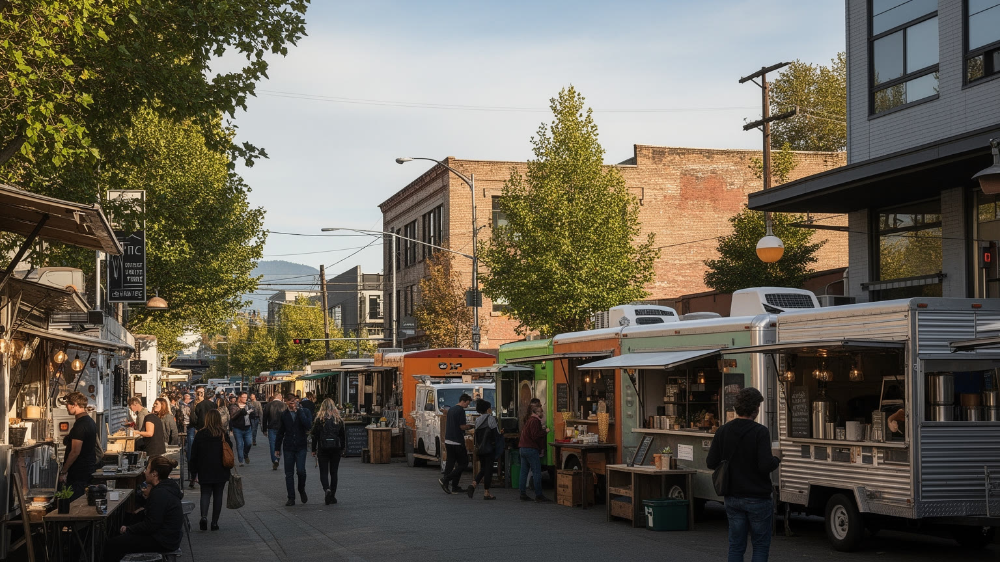
ポートランドの文化は、フードカート、クラフトビール、コーヒー、独立書店、レコード店、菜食、地元農産物、手仕事の店を通じて強い印象を残す。大都市の華やかさよりも、近隣の小さな店が作る密度に魅力がある。ウィラメット・バレーの農産物やワイン、太平洋岸北西部の魚介、アジア系やラテン系の食文化は、日常の外食と市場を豊かにしている。一方で、飲食とクラフトの世界は家賃、仕入れ価格、チップ、保険、季節需要、人手不足に左右されやすい。創造的な店が街の評判を高めても、働く人が近くに住めなければ文化は長続きしない。観光客が写真に撮る屋台やビールの背後には、早朝の仕込み、配達、清掃、移民の起業、家族経営のリスクがある。ポートランドの自由な食文化は、消費の流行だけでなく、地域経済と労働条件の上に立つ。小さな店を守ることは、街の個性を保存するだけでなく、近隣が互いに顔を合わせる場所を保つことでもある。書店や映画館、ライブ会場は政治的な会話や若い表現の受け皿にもなる。価格が上がりすぎれば、自由な文化は余裕のある人だけの趣味になる。日常の店が残るかどうかは、ポートランドらしさを飾りではなく生活として保てるかの試金石である。食の評判を地域の居場所へ戻せるかが、観光と暮らしを分けない鍵になる。安い挑戦の場が減れば、新しい味や音楽も生まれにくくなる。小規模な文化ほど、家賃と許認可と近隣の寛容さに支えられている。
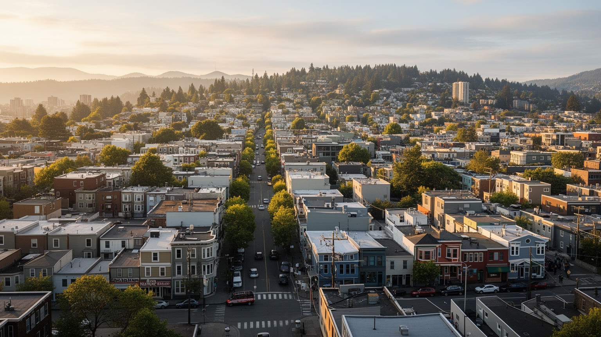
ポートランドはしばしば白人の多い進歩的な都市として語られるが、その表現だけでは都市の歴史も現在も見えにくい。オレゴンには黒人排除の歴史があり、都市開発や高速道路は黒人コミュニティを分断してきた。現在の都市圏には、ラテン系、ベトナム系、中国系、韓国系、ロシア語圏、アフリカからの移民、先住民、難民の暮らしがあり、学校、教会、寺院、食料品店、地域団体を通じて都市を支えている。だが、住宅費、言語、医療、交通、雇用資格、警察との関係、気候災害への備えには差が残る。多様性を祝う祭りや飲食店は重要だが、公平性は見た目のにぎわいだけでは測れない。公共交通の本数、学校の支援、低価格住宅、法律相談、通訳、地域医療、移民労働者の権利が日常の安心を決める。ポートランドを読むには、自由で小さな街という自己像の外側で、誰が見えにくくされ、誰が都市の魅力を支えているのかを確認する必要がある。公平な都市は、歓迎の言葉を制度と予算へ変えるところから始まる。先住民の土地と川への関係も、過去の記念ではなく現在の権利として扱う必要がある。学校区や医療へのアクセスが地区で分かれれば、子どもの将来も分かれる。都市の多様さは、中心部の広告ではなく、周辺地区の日常サービスの質に表れる。移民の店や礼拝所は、文化の彩りだけでなく情報と相互扶助の拠点でもある。
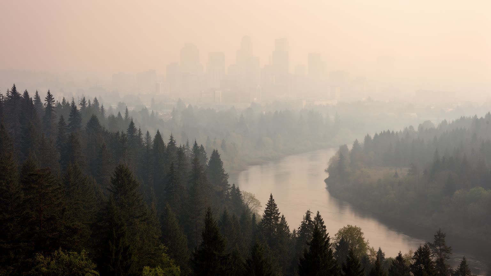
ポートランドの気候は、湿った冬と乾いた夏によって形づくられる。長い雨は街路樹、公園、苔むした庭、屋内文化を育てるが、夏の乾燥が強まると山火事の煙、熱波、水不足が都市に入り込む。近年の煙の日は、遠い森林の火災が都心の空気、学校、屋外労働、観光、医療、低所得世帯の健康に直結することを示した。冷房の少ない古い住宅、高齢者、路上生活者、倉庫や建設の労働者は、暑さと煙の影響を受けやすい。雨の多い都市という従来のイメージは、気候変動の中で修正を迫られている。街路樹の多さ、涼しい避難場所、空気清浄設備、山火事時の情報提供、洪水対策、河川の水質管理は、景観ではなく生命を守るインフラになる。ポートランドの環境意識は高いが、環境政策が所得や地区によって不均等に効けば、緑の都市という評判は弱くなる。雨を受ける街が、乾きと煙にも備えられるか。そこにこれからの都市運営の実力が現れる。公園や街路樹の多い地区は熱を和らげるが、舗装が多く木陰の少ない地区では同じ気温でも負担が重い。気候対策は太陽光や公共交通だけでなく、住宅断熱、冷房支援、避難所、保険、医療の連携まで含む都市政策である。雨水を受ける緑地や下水の能力も、強い雨と乾く夏の両方に備える基礎になる。煙の日に働く配達員や屋外労働者を守る規則も、気候適応の一部である。環境都市の名は、弱い人を守る実務で試される。
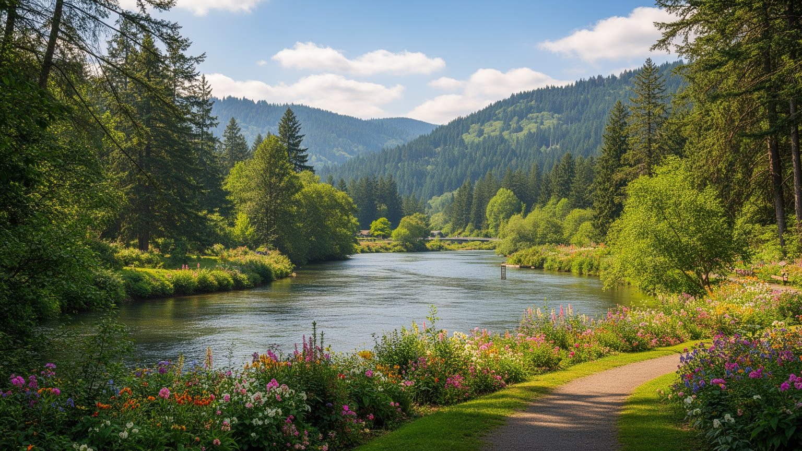
ポートランド観光は、都心の店だけでなく、都市のすぐ外にある自然と強く結びついている。ワシントンパーク、日本庭園、ローズガーデン、フォレストパーク、ウィラメット川沿いの散歩道は、住民の日常と旅行者の行程を重ねる。車やツアーで少し移動すれば、コロンビア川渓谷の滝、フッド山、ワイン産地、太平洋岸へ向かえる。自然への近さは都市の大きな魅力だが、混雑、駐車、登山道の摩耗、山火事リスク、先住民の土地への敬意、観光労働の季節性も伴う。アウトドア文化は健康で自由なイメージを持つ一方、車、装備、休暇、情報が必要で、誰にでも同じように開かれているわけではない。都心の公園の安全や清掃、公共トイレ、ホームレス支援も観光と生活の接点になる。ポートランドを自然観光の都市として読むには、美しい森や庭園だけでなく、その管理費、労働、アクセスの公平性を見なければならない。自然の近さを公共の財産として扱える時、都市の魅力は観光消費を越えて日常の健康へつながる。雨の日には美術館、書店、カフェが旅の中心になり、晴れた日には川辺と森へ人が流れる。この切り替えの軽さが都市の魅力だが、観光収入を公園管理、交通、地域福祉へ戻せるかが持続性を左右する。自然は都市の外にある逃げ場ではなく、都市運営の一部である。短い滞在でも、川と森と商店街を同時に歩ける点が印象に残る。
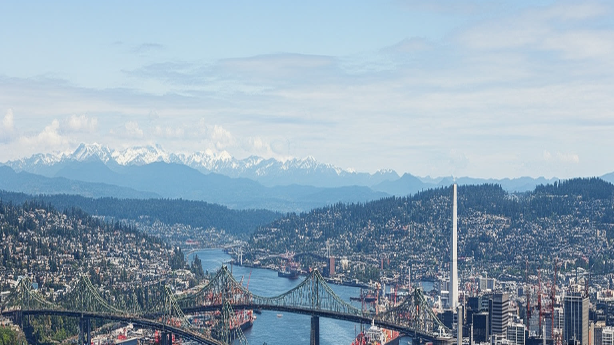
ポートランドは、暮らしやすい中規模都市、橋と自転車の街、クラフト文化の街、森に近い街として愛されてきた。その像は多くの部分で本当だが、都市の全体を説明するには足りない。川と港は国際物流を動かし、半導体は世界の供給網と地域の水資源に依存し、都市計画は評価されながら住宅費と排除を生んできた。抗議の政治は公共性を広げる力を持つ一方、治安不安や市民の分断も映す。食と書店と醸造所の軽やかな文化は、移民、低賃金労働、家賃、起業リスクに支えられている。雨と緑の都市は、煙、熱波、洪水、山火事に備えなければならない。ポートランドを読むことは、魅力的な生活様式を楽しむだけでなく、その生活様式を誰が支え、誰がそこから押し出されるのかを見つめることである。旅行者には穏やかな川辺と個性的な店が残り、住民には家賃、交通、学校、公共安全、空気の質が毎日続く。両方を重ねると、この都市の世界性は規模ではなく、理念と実務の距離に現れる。大都市ほど巨大ではないからこそ、政策の失敗も成功も近く見える。橋を渡る短い移動の中に、港、住宅、森、工場、抗議の広場、フードカートが連続する。その近さがポートランドの読みやすさであり、同時に逃げ場のない課題でもある。小ささを魅力にするなら、弱い立場の人の暮らしも近くに置き続ける覚悟がいる。